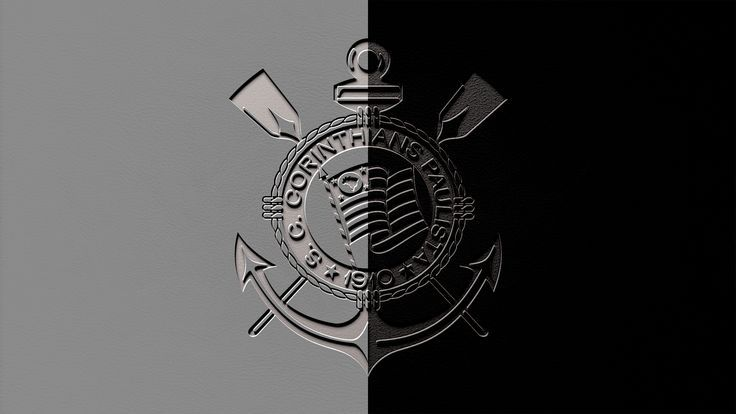

Vai Corinthians

O Corinthians, fundado em 1º de setembro de 1910, é um dos clubes mais populares e tradicionais do futebol brasileiro. Conhecido carinhosamente como "Timão", o clube tem uma torcida apaixonada e fiel, chamada de "Fiel", que o acompanha em todos os momentos, seja nas vitórias ou nas derrotas. Sua sede é o estádio Neo Química Arena, localizado em Itaquera, na zona leste de São Paulo, palco de grandes jogos e emoções.
Ao longo de sua história, o Corinthians conquistou títulos importantes, como o Campeonato Brasileiro, a Copa do Brasil e, principalmente, a inesquecível vitória na Copa Libertadores da América em 2012, seguida do título mundial no mesmo ano, derrotando o Chelsea no Mundial de Clubes da FIFA. Essas conquistas solidificaram o clube como uma potência não apenas no cenário nacional, mas também internacional. O Corinthians também é conhecido por sua forte identidade, representando a luta e a resistência da classe trabalhadora.
Além do futebol, o Corinthians se destaca em outras modalidades esportivas, como o futebol feminino, onde é um dos maiores vencedores do Brasil, e em esportes como o vôlei e o basquete. O clube também mantém um forte engajamento social, com projetos que beneficiam comunidades carentes, reforçando seu papel como uma instituição que vai além dos gramados. Com uma história repleta de glórias, superações e paixão, o Corinthians continua sendo um símbolo de garra e determinação no esporte brasileiro.